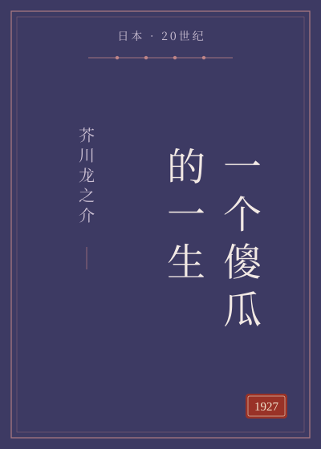
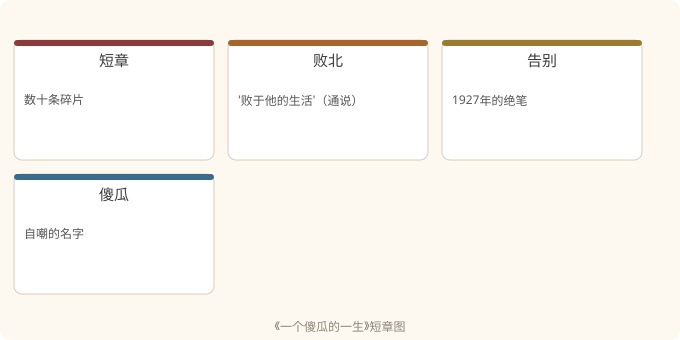

一个傻瓜的一生
一、基本信息
| 作者 | 芥川龙之介 |
|---|---|
| 成书/出版 | 1927年（作者页 B109 口径：一个傻瓜的一生（1927）） Ryunosuke Akutagawa — Encyclopaedia Britannica（百科全书） |
| 国别/地区 | 日本 |
| 时代 | 现当代 · 20世纪 |
| 体裁 | 短章集 |
| 语言 | 日语 |

《一个傻瓜的一生》短章图（主题·结构图）
二、创作背景
作者页（B109）：芥川 major_works 载'一个傻瓜的一生（1927）'——其绝笔自传性短章（B109 作者页定位，详见 luoshengmen 条核对）。
文体（通说待核）：由数十条短章缀成——'败于他的生活'等警句。
三、内容脉络
短章序列：从'时代'到'败北'——芥川晚年心境的碎片（通说待核）。
四、主要人物表
| 人物 | 身份 | 说明 |
|---|---|---|
| '傻瓜' | 作者自况 | （通说待核） |
五、主题与艺术特点
- '败于生活'的自白（通说待核）。
- 短章体的告别（通说）。
- 艺术与生活的终局（通说待核）。
六、影响与评论
- 作者页：芥川绝笔自传性短章（B109 作者页口径）。
Ryunosuke Akutagawa — Encyclopaedia Britannica（百科全书） - 与《河童》同年发表的告别双作（通说待核）。
Ryunosuke Akutagawa — Encyclopaedia Britannica（百科全书）
七、阅读建议
难点
- 短章的拼贴。
- 自传与虚构的界限。
- 《一个傻瓜的一生》（收于《芥川龙之介全集》，通说待核）。
- 日文原版（公有领域渐近）。
芥川阅读的终点站。
八、待核实
- 短章条数核对。
- '败于他的生活'等句核对。
- 与自杀（1927年7月24日）的关系待核。
本页主要来源
芥川龙之介的其他收录作品：罗生门（芥川龙之介短篇小说选）